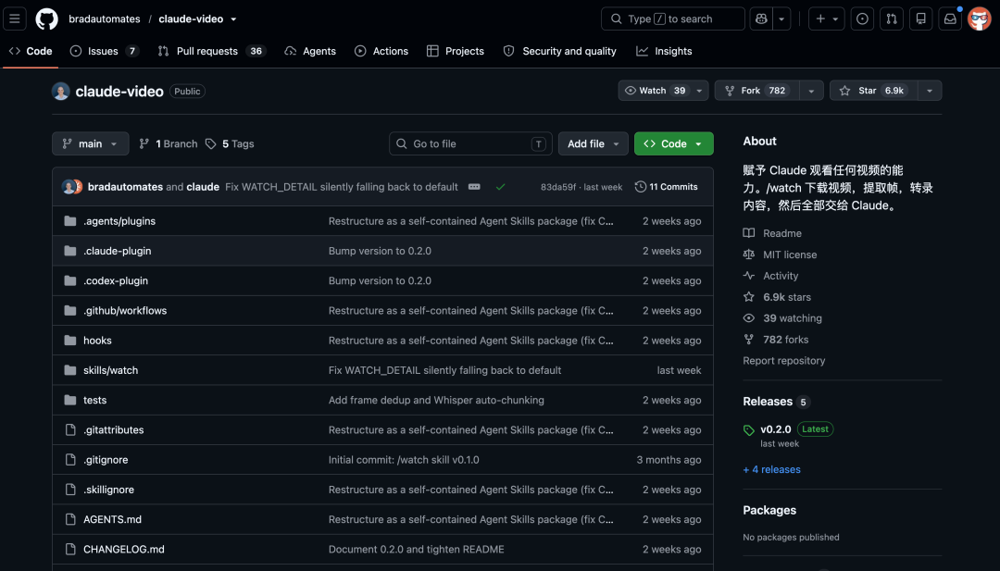
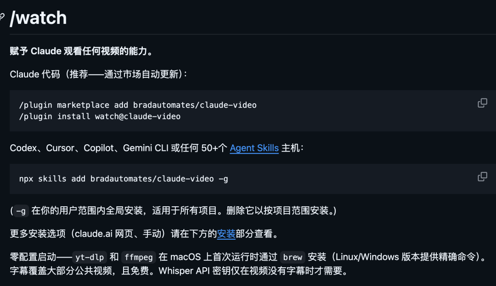
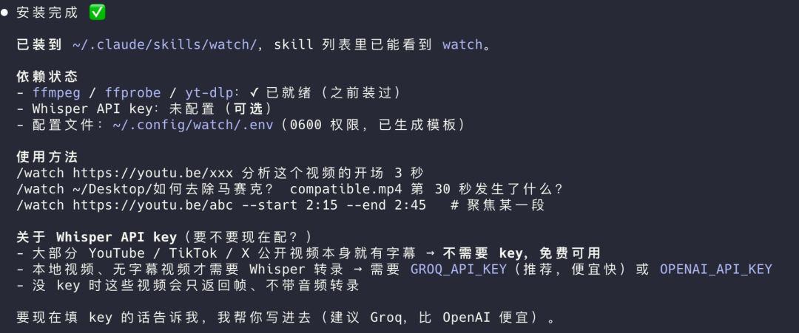
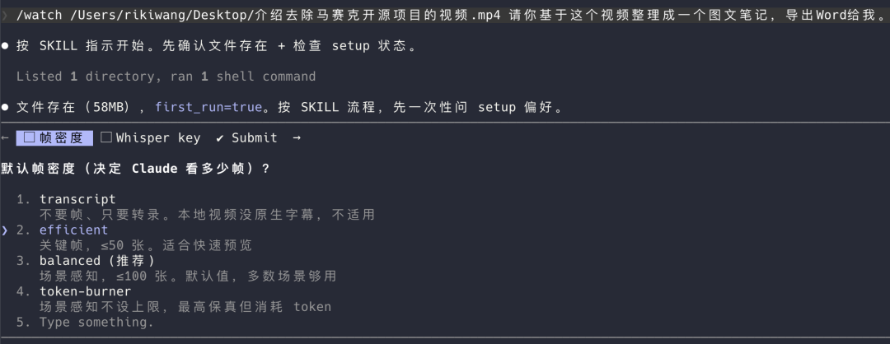
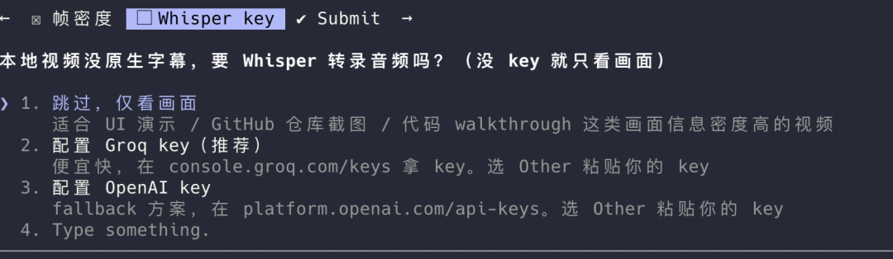
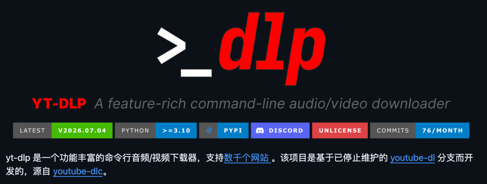

Agent 配一些基础的 tool 或 skill 就能读网页，看代码，处理文档。
但视频一直很难搞。
你丢给它一个 YouTube 链接，它大概率只能读到标题、简介，或者拿到一份字幕。可很多视频真正有价值的东西，不在字幕里。
得理解视频才行。

最近 GitHub 上有个项目挺火，叫 claude-video。
它给 Claude 加一个 /watch 能力，让 Claude 可以处理视频链接和本地视频文件，看懂视频。
目前这个项目已经拿到了约 6.8k Star。
01
开源项目简介
claude-video 是 Brad Bonanno 做的一个开源项目，你可以给它一个 YouTube 链接，也可以给它一个本地视频路径，然后顺手问一句：
/watch https://youtu.be/xxx 总结这个视频或者：
/watch ~/Movies/screen-recording.mp4 这个视频哪里有 xx 的画面？它会先去拿视频字幕。
再根据需要下载视频，抽取关键画面帧。
如果视频没有字幕，它还可以走 Whisper 转录音频。
最后，它把带时间戳的字幕和视频帧一起交给 Claude。
这样 Claude 回答你的时候，就不是只靠标题猜，也不是只看字幕硬总结。它能同时参考画面和声音，回答得更像一个真的看过视频的人。
这个点很关键。

因为很多视频分析工具，本质上只是视频转文字。它们能告诉你视频里说了什么，但不一定知道画面里发生了什么。
claude-video 的玩法更适合 Claude 这种多模态模型：把视频拆成它能读懂的材料，再让它综合判断。
开源地址：https://github.com/bradautomates/claude-video02
如何安装
只需要把如下提示词发给你的 Claude Code 就行了。
帮我安装这个 skill：https://github.com/bradautomates/claude-video
试用一下。
我把一个 6 分钟的风趣的介绍去除马赛克开源项目的视频丢给它，让我它给我整理成一个图文笔记。
/watch 介绍去除马赛克开源项目的视频.mp4 请你基于这个视频整理成一个图文笔记，导出Word给我。首先，它会澄清问你一下帧密度、要不要分析字幕。


最后生成的图文效果如下。
Claude Video 读了 50 帧 + 音频字幕，所以能大体理解视频再讲的啥。
生成的图文，内容逻辑就会更顺畅一些。
第一次运行时，它还会检查本机有没有 ffmpeg 和 yt-dlp（一个下载 YouTube 视频的 cli）。
macOS 上会尝试通过 Homebrew 自动安装。Linux 和 Windows 会给出对应命令。
如果你的视频没有字幕，还需要配置 Whisper 相关 API Key。
它会在本地配置文件里给你留好位置，优先支持 Groq，也支持 OpenAI。
这个项目最适合的场景，不是单纯总结一个视频。
总结当然可以，但有点浪费。
它真正有意思的地方，是处理那些文字和画面必须一起看的内容。
比如分析一个爆款视频。比如做一个视频学习笔记。
03
背后原理
它的实现思路不复杂，但组合得很实用。
第一步，用 yt-dlp 处理视频源。
只要是 yt-dlp 支持的平台，它大多都能支持。

比如 YouTube、TikTok、X、Instagram 啥的，也支持本地视频文件，比如 .mp4、.mov、.mkv、.webm。
第二步，优先拿字幕。
如果视频本身有字幕，项目会优先走字幕。
这个成本最低，也最快。
第三步，必要时下载音频或视频。
如果你只要文字总结，有字幕就够了。如果你要分析画面，或者视频没有字幕，它才会继续拉取需要的内容。
第四步，用 ffmpeg 抽帧。
它有不同的 detail 模式。比如 efficient 会走更快的关键帧提取，balanced 和 token-burner 更偏向场景变化帧。
第五步，没有字幕时，用 Whisper 做转录。
项目支持 Groq 的 whisper-large-v3，也支持 OpenAI 的 whisper-1。
第六步，把画面帧和字幕交给 Claude。
Claude 最后基于这些材料回答你的问题。
这套流程听起来像是绕了一圈，但很符合现在 AI 工具的思路。
模型不一定原生支持你丢一个任意视频进去，但你可以把视频拆成模型能理解的图片、文字和时间线。
另外它还考虑了 token 成本。
一段 30 秒短视频还好。
如果你丢一个 50 分钟视频进去，然后每几秒截一张图，图片 token 很快就会堆起来。
claude-video 在这块做了不少控制。
它有帧预算。比如短视频会给更密的帧，长视频会自动稀疏一点10 分钟以上的视频，在部分模式下默认会限制到 100 帧左右。
它还有去重。
像屏幕录制、PPT 课程这种视频，经常一个画面停很久。如果每隔几秒都截一张，很多帧其实几乎一样。
项目会做一轮帧去重，把近似重复的画面丢掉，尽量把预算花在真正变化的画面上。
04
点击下方卡片，关注逛逛 GitHub
这个公众号历史发布过很多有趣的开源项目，如果你懒得翻文章一个个找，你直接关注微信公众号：逛逛 GitHub ，后台对话聊天就行了：